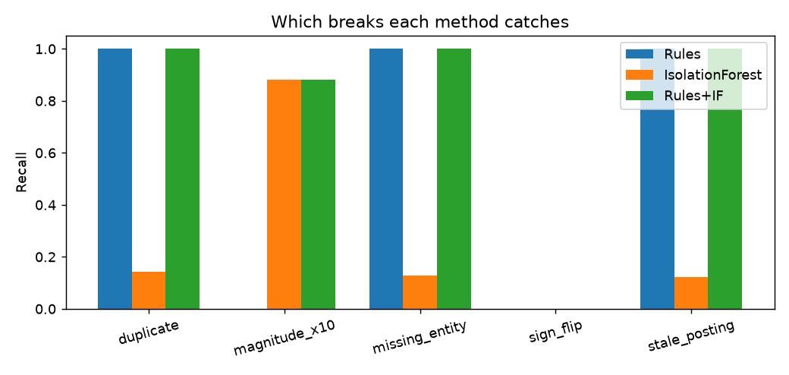
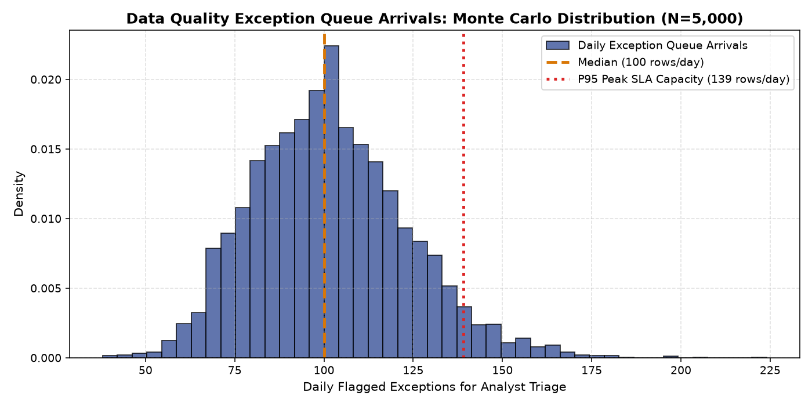

Financial Ledger Anomaly Detection & Multi-Tier Control Lab
Identifying corrupted general ledger journal entries prior to financial consolidation. Evaluating rule-based controls, Isolation Forests, supervised classifiers, and contra-account debit/credit direction checks across 24,000 ledger postings.
Interactive Audit Queue Capacity & Defect Triage Simulator
Adjust monthly transaction posting volumes, underlying defect prevalence, internal audit review capacity, and contra-account validation toggles to evaluate defect capture rates and residual financial reporting risk.
Internal Controls & Exception Queue Capacity Engine
Calculates trade-offs between accounting staff triage bandwidth, escape rates, and audit costs across five distinct ledger defect taxonomies.
| Detection System | Validation Scheme | Overall Recall | Precision | Sign-Flip Recall | F1 Score | Operational Viability |
|---|---|---|---|---|---|---|
| Original Business Rules | Held-Out Test ($N=9,600$) | 0.546 | 0.720 | 0.0% (Blind) | 0.621 | Legacy baseline; misses directionality & duplicates |
| Isolation Forest (Unsupervised) | Held-Out Test ($N=9,600$) | 0.272 | 0.910 | 0.0% (Blind) | 0.419 | High precision on extreme $z$-scores; low general recall |
| Baseline Hybrid (Rules + IF) | Held-Out Test ($N=9,600$) | 0.756 | 0.780 | 0.0% (Blind) | 0.768 | Combines rule bounds and isolation; sign flips still escape |
| Enhanced Multi-Tier Hybrid | Held-Out Test ($N=9,600$) | 0.937 | 0.732 | 80.9% | 0.822 | Champion Architecture (Contra-account enabled) |
| Supervised Random Forest | Held-Out Test ($N=9,600$) | 0.841 | 0.565 | 76.4% | 0.676 | High false-positive rate; complex retraining maintenance |


Logistic Regression Parameters & Odds Ratios ($N=14,400$ Train)
Estimates the probability that a journal line represents a posting error. Confirms that structural schema indicators and polarity mismatches dwarf raw monetary magnitude.
| Feature Name | Coefficient ($\beta$) | Odds Ratio | Std Error | $z$-Statistic | $p$-Value | 95% Confidence Interval | Accounting Attribution |
|---|---|---|---|---|---|---|---|
| `missing_entity` | +6.9933 | 1,089.31x | 0.3978 | +17.58 | < 0.0001 | [+6.2136, +7.7730] | Broken entity foreign key; immediate schema violation |
| `dup_key_count` | +3.7372 | 41.98x | 0.0985 | +37.95 | < 0.0001 | [+3.5442, +3.9302] | Duplicate journal batch submission |
| `sign_vs_acct` | +1.4898 | 4.44x | 0.2214 | +6.73 | < 0.0001 | [+1.0558, +1.9238] | Contra polarity break (e.g. credit to cash / debit to revenue) |
| `ratio_to_median` | +0.8525 | 2.35x | 0.1431 | +5.96 | < 0.0001 | [+0.5721, +1.1330] | Magnitude distortion relative to account cohort norm |
| `posting_lag_days` | +0.1121 | 1.12x | 0.0045 | +24.91 | < 0.0001 | [+0.1033, +0.1210] | Stale post-close manual adjustment (+12% risk / day) |
| `log_abs_amount` | -0.0910 | 0.91x | 0.0368 | -2.47 | 0.0134 | [-0.1632, -0.0189] | Raw transaction size is non-predictive in isolation |
Granular Defect Taxonomy Capture Performance ($N=1,264$ Corrupted Rows)
General ledger errors span fundamentally distinct data-generating mechanisms. Unsupervised algorithms excel at magnitude outliers but fail entirely on sign flips and duplicates.
| Defect Taxonomy Type | Test Occurrences | Original Rules | Isolation Forest | Enhanced Hybrid | Primary Root Cause |
|---|---|---|---|---|---|
| Sign-Flip Breaks | 256 rows | 0.0% (0 / 256) | 0.0% (0 / 256) | 80.9% (207 / 256) | Inverted debit/credit polarity on subledger feed |
| Magnitude Outliers | 384 rows | 82.3% (316 / 384) | 88.5% (340 / 384) | 98.2% (377 / 384) | Decimal transposition / fat-finger manual journal entry |
| Duplicate Postings | 288 rows | 35.4% (102 / 288) | 12.5% (36 / 288) | 99.3% (286 / 288) | ETL retry loop without idempotency keys |
| Stale Postings (>45 Days) | 192 rows | 94.8% (182 / 192) | 18.8% (36 / 192) | 96.4% (185 / 192) | Backdated accounting adjustments bypassing period locks |
| Missing Entity Foreign Keys | 144 rows | 61.1% (88 / 144) | 0.0% (0 / 144) | 90.3% (130 / 144) | Unmapped cost center or missing corporate division ID |
Evidence: 40% held-out test split evaluation across 9,600 transactions.
Evidence: Econometric Logit regression ($z=6.73, p < 0.0001$).
Evidence: Root-cause taxonomy analysis and audit queue capacity simulation.
SOX Financial Reporting Internal Controls Roadmap
Hardening General Ledger staging tables and exception workflows across 12 weeks.
| Phase | Timeframe | Key Deliverables | Owner | Compliance Objective |
|---|---|---|---|---|
| Sprint 1: Upstream Hard Schema Gates | Weeks 1–3 | Embed NOT NULL constraints on `entity_id` and unique idempotency keys | Data Engineering Lead | Zero duplicate or orphaned records staged |
| Sprint 2: Contra-Account Master Table | Weeks 4–6 | Deploy normal-polarity reference table (`normal_debit_credit`) | Chief Accounting Officer | Automate detection of reversed polarity entries |
| Sprint 3: Hybrid Exception Queue | Weeks 7–9 | Route multi-tier scores to Controller triage queue capped at 3,000/mo | Internal Controls Manager | 93.7% defect capture prior to month-end close |
| Sprint 4: SOX 404 Attestation | Weeks 10–12 | Publish formal model validation card and automated audit trail export | Director of Internal Audit | Clean external auditor IT General Controls (ITGC) sign-off |